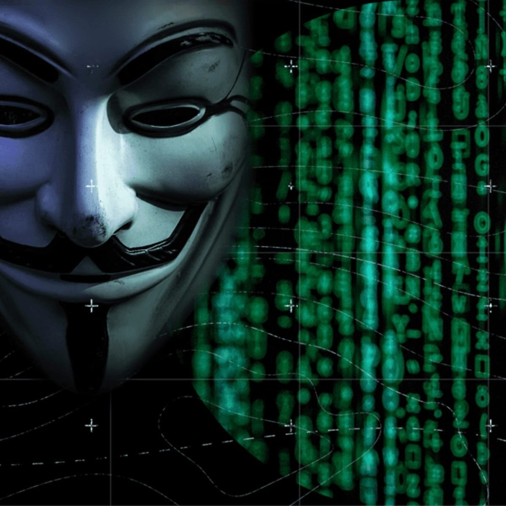
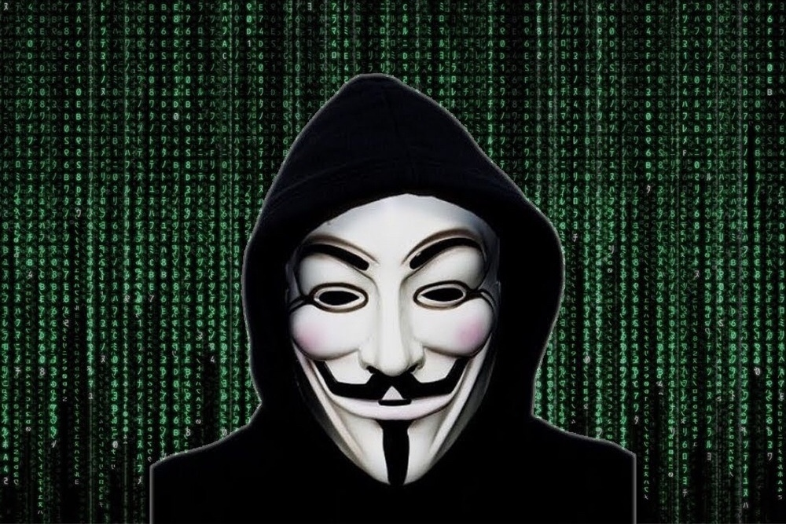

Новости из мира кибербезопасности
1. Крупная кибератака на крупные корпорации
В последние несколько дней произошла масштабная кибератака на крупные мировые корпорации.
Злоумышленники использовали новые методы атаки, обойдя современные системы защиты.
Подробности расследования еще уточняются.
 2. Уязвимость в популярном программном обеспечении
Обнаружена серьезная уязвимость в одном из самых широко используемых программных продуктов.
Эксперты предупреждают о возможности широкого распространения вредоносных программ через данную уязвимость.
Рекомендуется обновить программное обеспечение немедленно.
3. Новый вид рансомвара атакует пользователей
Зарегистрирован новый вид рансомвара, который атакует не только корпоративные системы, но и обычных пользователей.
Злоумышленники требуют высокие выкупы за восстановление данных.
Эксперты рекомендуют быть предельно осторожными при открытии подозрительных файлов.
4. Киберпреступники используют искусственный интеллект
В последних атаках злоумышленники успешно применяли искусственный интеллект для более эффективного обхода систем безопасности.
Эксперты предупреждают о возможном увеличении уровня сложности кибератак и призывают к улучшению защиты.
5. Государственные органы ужесточают меры кибербезопасности
В свете последних событий, многие страны ужесточают меры по кибербезопасности.
Проводятся совместные операции для выявления и пресечения деятельности киберпреступников.
Эксперты считают, что важно развивать международное сотрудничество в борьбе с киберугрозами.